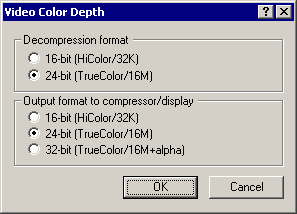

VirtualDub help - Dialogs: Video color depth | |||||||
| On a crash... Dialogs: Video filtersVideo frame rate control Video color depth Video range Video compression Audio filters Audio interleaving Audio compression Audio conversion Audio volume Capture settings Capture preferences Capture volume meter Preferences |  Selects the desired RGB bit depth for video decompression and video compression.
| ||||||